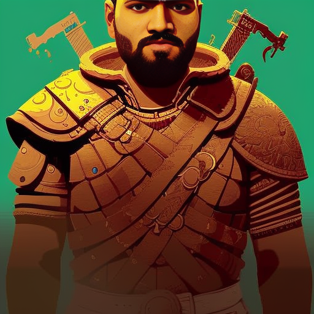
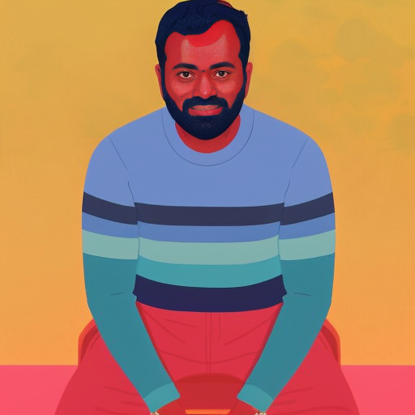
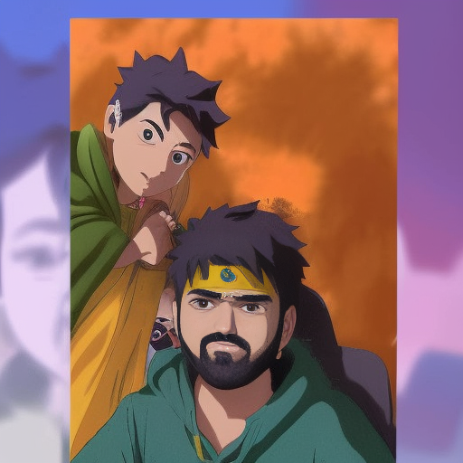
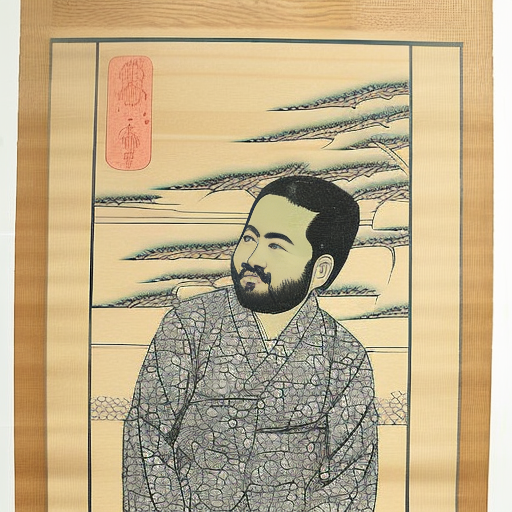
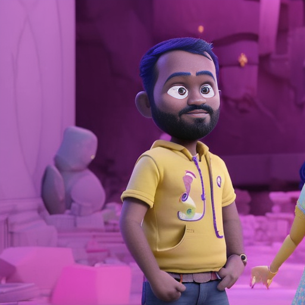
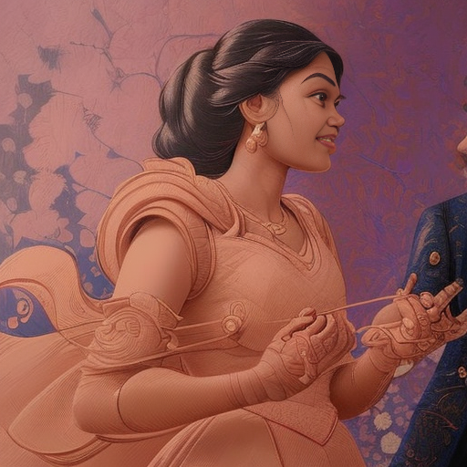
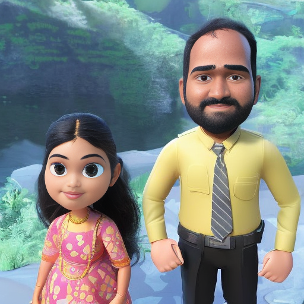
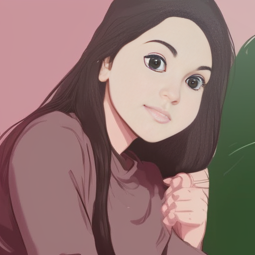
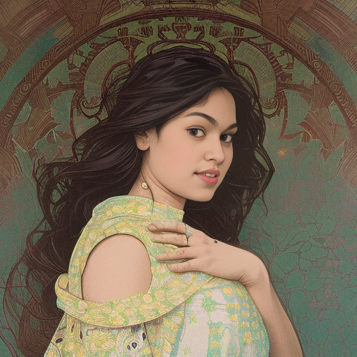
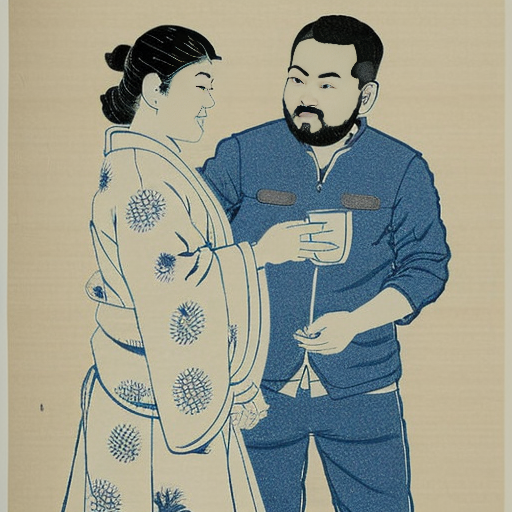

Creating AI Art of Myself With Stable Diffusion + Dreambooth
What is Stable Diffusion
For years, style transfer and image generation was the domain of an architecture called GANs. It produced results that were, well, not enough to impress a person not into the topic. And it look a lot of time, compute, and didn’t always converge. That is history anyway, so we do not need to trouble ourselves.
This year changed everything in generative AI. Three models, particularly Stable Diffusion took the world of art by storm. The text-to-image model could produce images with high fidelity, coherence, and able to produce images with so many styles. It was a 4GB checkpoint that contained in itself majority of the visual world created by man. With a bunch of text it could bring imagination to reality.
The Magic
All of these images are generated by AI completely on its own. There are some sites like lexica.art where you can scroll through tons of AI-generated art like this, as well as the prompts that led to them.

You can try it for yourself at any one of the many huggingface spaces:
- App for Stability Diffusion 1.5
- App for Stability Diffusion 2, recently released
- App that runs models for many styles
It can take 10-20s to generate an image.
If you prefer a more hands-on approach, use this colab notebook - fast_stable_diffusion_AUTOMATIC1111.ipynb, in this notebook, give the path to model hosted on huggingface (I used runwayml/stable-diffusion-v1-5 for my base model). The notebook has all the code for installing dependencies, and will launch a GUI which you can use for experimentation.
Dreambooth
However, the publicly released stable diffusion model includes only those concepts, people, artstyles that were present in the training dataset of it. What if you want to add new people/concepts/styles, and use them to generate art?
That’s where dreambooth comes in. This technique allows you to add a person/concept to the stable diffusion model using only ~20 images of it, and takes only ~1 hour on free colab to train! Because of dreambooth, fine-tuning the stable diffusion model on a given style or person is a breeze.
Finetuning Approach
My primary resource for fine-tuning, i.e. adding myself to the stable diffusion space was this blog post: How to Use DreamBooth to Fine-Tune Stable Diffusion (Colab). Which points to a beautiful colab notebook - TheLastBen/fast-stable-diffusion, which has it all ready- you only need to give the links to the base model, huggingface token (you need to signup to this website), and upload your images, and hit train.
Follow the advice in the blogpost and the notebook, and you’ll have a gradio app in your browser. Now you can add any text prompt you want in the text box, and generate results!
Finding the Right Prompts
Yeah, except, any prompt will not give you the best results. Prompt Engineering is a big deal here. You have to construct a prompt, add labels and styles in order to direct the model to get an acceptable image. You also can tinker with the hyperparameters- adjust the CFG scale, sampling steps, to get better results.
My experience- prompt engineering sucks. It’s more of an art that engineering, and there’s no other way but trial and error. Fortunately there are resources on the internet that can help you.
For me the process looked like:
- Go to a resource like lexica.art, and find an image you like
- Copy the prompt and settings, and modify the prompt to include your token used during training.
This will generally give you good results, and how I got most of my good images. However tuning of hyperparameters requireds trial and error, and hence time. I didn’t spend too much time on this, so I fixed my sampling method at euler-a and steps at 40-50. I only tinked with CFG scale.
Results on Myself
Finally, the meat of the post- let’s see the actual results on myself.





Some Portraits of Me
Some generated art of my wife and me.




